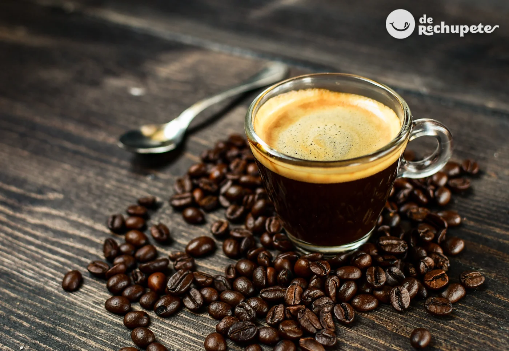
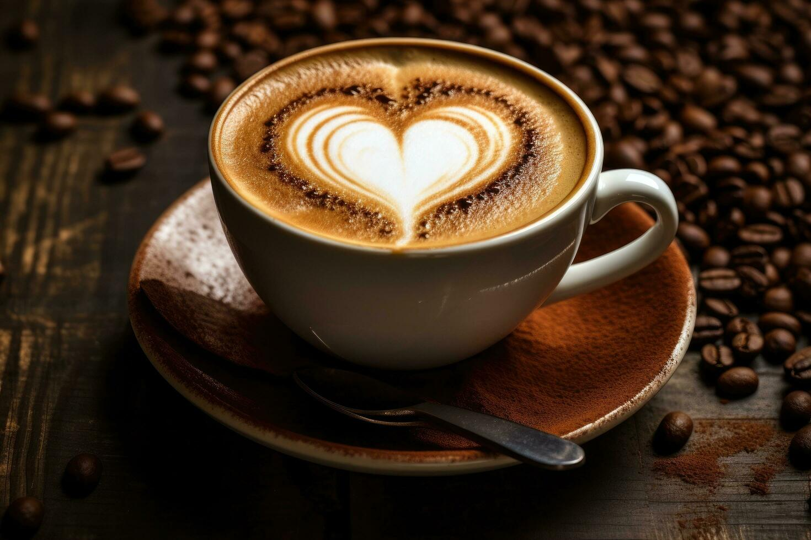
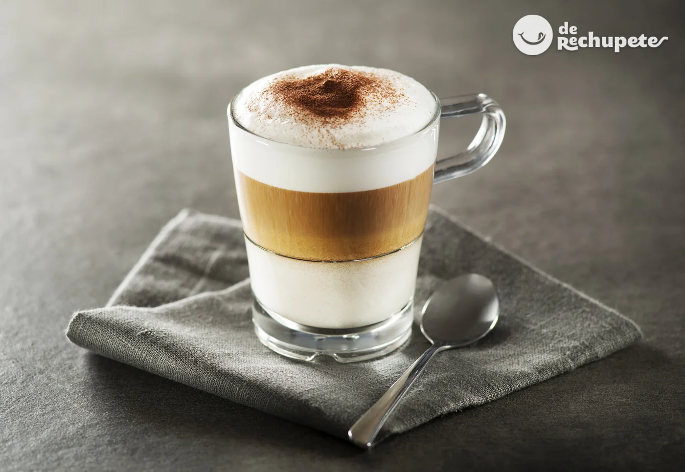
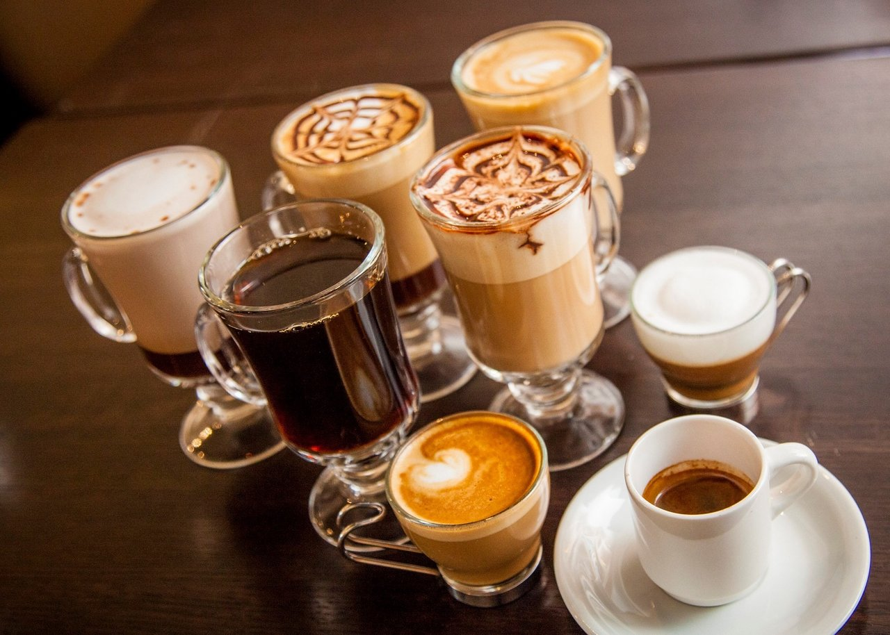
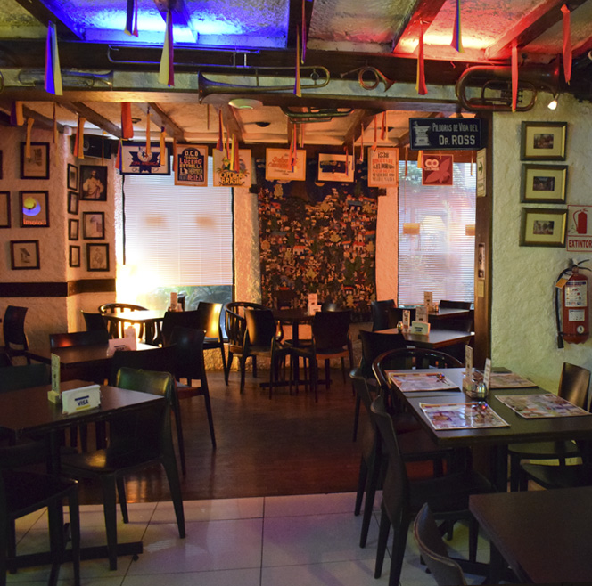

Los diferentes tipos de café
El mundo del café es vasto y lleno de maravillosas variedades que esperan ser descubiertas. Cada tipo de café tiene su propia personalidad, ofreciendo una gama
infinita de sabores y experiencias para todos los paladares. Desde el fuerte y concentrado espresso, perfecto para un impulso rápido de energía, hasta el suave
y cremoso latte que invita a la relajación, cada preparación tiene su encanto único. El cappuccino, con su deliciosa espuma, y el macchiato, con su toque de
leche, también son favoritos entre los conocedores
Café Expresso

El café espresso es una de las formas más icónicas y apreciadas de disfrutar el café. Originario de Italia, el espresso se caracteriza por su sabor intenso
y concentrado, así como por su rica crema, una capa de espuma dorada que se forma en la superficie.
Café Latte

El café latte es una de las bebidas más apreciadas en nuestro menú, y por una buena razón. Con su combinación perfecta de espresso intenso y leche cremosa,
el latte ofrece una experiencia suave y reconfortante que deleita los sentidos.
Café Capuchino

Permítanme presentarles una verdadera obra maestra: el café capuchino. Con su combinación equilibrada de espresso, leche vaporizada y una generosa capa de
espuma, el capuchino es una delicia para los sentidos que nunca pasa desapercibida.
Café Macchiato

El café macchiato.Es una pequeña joya del mundo del café, con su equilibrio perfecto entre espresso fuerte y una pizca de leche espumosa, el macchiato
es una experiencia de sabor que cautiva los sentidos y deja una impresión duradera.
El Palacio Cafetero
En nuestro café, estamos dedicados a brindarte una experiencia excepcional que va más allá de una simple taza de café.
Deliciosas Bebidas de Café

Disfruta de una amplia variedad de bebidas de café, desde espressos y lattes hasta cappuccinos y macchiatos, todos preparados con granos de alta calidad.
Ambiente Acogedor

Relájate en nuestro ambiente confortable, diseñado para que te sientas como en casa, ya sea que vengas a trabajar, estudiar o simplemente a disfrutar de un buen momento.
Eventos y Actividades

Participa en nuestras catas de café, talleres de barismo y eventos especiales como noches de música en vivo y exposiciones de arte.